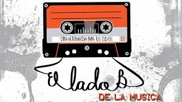

Selección musical
Selección de música
- -->Musica Electrónica
- La música electrónica es aquel tipo de música que emplea instrumentos musicales electrónicos y tecnología musical electrónica para su producción e interpretación.
- -->Hip Hop
- El hip-hop1 es una cultura y movimiento artístico originado en el Sur del Bronx y Harlem, en la ciudad de Nueva York, entre los jóvenes afroamericanos e hispanos durante la década de 1970.
- -->Indie
- El indie rock es un estilo del rock y actualmente es un subgénero musical del rock alternativo, que se originó en el Reino Unido y los Estados Unidos en la década de 1980.
- -->Reggae
- El reggae es un género musical que se desarrolló por primera vez en Jamaica hacia mediados de los años 1960.
- -->Rock
- El rock es un término amplio que agrupa a una variedad de géneros de música popular.1 Su forma originaria, conocida como rock and roll, surgió mayormente de la combinación de dos géneros anteriores como eran el rhythm and blues y el country.

"La musica puede dar nombre a lo innombrables y comunicar lo desconocido"
Música Electrónica
Sonny John Moore (Los Ángeles, California, 15 de enero de 1988), más conocido por su nombre artístico Skrillex, es un DJ, productor musical, músico y cantante estadounidense de EDM y ex vocalista y guitarrista de su primera banda atRisk entre 2001 a 20032 y actual vocalista de la banda de post-hardcore y metalcore From First to Last.
Como productor, destaca la implementación de Ableton Live. En noviembre de 2011, Skrillex fue nominado a cinco categorías las cuales son Premios Grammy, de los cuales ganó tres, mejor remix por «Cinema» de Benny Benassi, mejor grabación de dance por «Scary Monsters and Nice Sprites» y mejor álbum. En 2014, estrenó su álbum debut Recess, y actualmente ocupa el puesto #16 en la encuesta realizada por la revista DJmag.
A él se le adjudica el hecho de que la música dubstep haya alcanzado gran popularidad en los últimos años, y trabajaba en un dúo con Diplo, llamado Jack Ü, y juntos hicieron colaboraciones con Kiesza, AlunaGeorge, Kai y Bunji Garlin. Skrillex también fue el creador del sello discográfico llamado OWSLA y actualmente trabaja en su antigua banda From First To Last.
Mejor canción de Skrillex
- Bangarang feat. Sirah
Hip Hop
Juan Prieto Sánchez (Barcelona, Cataluña, España, 11 de marzo de 1981), más conocido como ZPU, es un MC de rap en español.2 Es reconocido por ser uno de los raperos más profundos y relevantes de la escena del hip hop de habla hispana. Es hermano de Soma, uno de los productores musicales más laureados del rap español.
Comienzos
Su primer grupo fue Muerte Acústica (que más tarde pasaría a llamarse Magnatiz) allá por los años 1994 y 1995. En 1997, junto a Muerte Acústica, sacó su primera maqueta titulada "Las rimas escritas benditas", y en el 98 la segunda llamada "MAnada vamos A".
Años más tarde, aprovechando un cambio de DJ en el grupo y la experiencia ganada, decidieron cambiar su nombre por Magnatiz, nombre con el que sacarían al mercado dos LP, realizando sus respectivas giras. Después de estos lanzamientos el grupo se disuelve y ZPU continúa su trabajo en solitario.
Mejor canción de ZPU
- Instinto Animal
Indie
Supersubmarina es una banda española de indie rock originaria de Baeza (Jaén). Está formada por José Chino (voz y guitarra), Jaime (guitarra solista), Pope (bajo) y Juanca (batería y percusión).
La idea de formar un grupo surgió en el 2005, cuando empezaron a tocar simplemente por diversión y en unas condiciones muy precarias. Uno de esos días que quedaron para tocar, introdujeron un arreglo a un tema que imitaba el sonido del mar, y de ahí salió el nombre original del conjunto. En febrero de 2011, la Academia de las Artes y las Ciencias de la Música decide nominar en el apartado de autor revelación a Supersubmarina por el tema "XXI" en los premios de la Música.
En el verano de 2016 se vieron obligados a suspender su gira y promoción de su disco debido a un accidente de tráfico ocurrido el 14 de agosto de ese año, que acabó con todos sus miembros en el hospital. Juanca fue el último de sus componentes en salir de la UCI, pasando a planta el 29 de septiembre de 2016.
Mejor canción de SuperSubMarina
Reggae
Green Valley es una banda española de reggae y dancehall, compuesta por seis músicos alaveses y catalanes. Sus canciones intentan reivindicar las injusticias sociales y dar a conocer su mensaje positivo por todo el mundo, con el fin de despertar la conciencia social. Es una de las bandas más reconocidas de roots reggae en España.
En 2016 han publicado su nuevo trabajo, llamado “AHORA”. Es el quinto trabajo de estudio de Green Valley y posiblemente sea el disco más ambicioso de la banda, hasta el momento. Grabado por Genis Trani (Reggeland) y Chalart 58 (La Panchita Estudios) y con las colaboraciones de artistas de renombre como Morodo, Fyahbwoy, Rapsusklei, La Tifa o Movimiento Original(Chile).
Mejor canción de Green Valley
Rock
MGMT (antes conocido como The Management) es un grupo de rock psicodélico de los Estados Unidos, creado en el 2002, integrado por Andrew VanWyngarden (guitarra y primera voz) y Ben Goldwasser (teclado maestro y voz); en sus presentaciones en vivo, también lo conforman Simon O'Connor (bajo y voz), James Richardson (guitarra, teclados, voz), Will Berman (percusiones, armónica, voz) y Matthew Asti (bajo). Firmaron con Columbia Records y RED Ink, en el 2006, y debutaron profesionalmente en el 2007, con el álbum Oracular Spectacular. Después del lanzamiento de Oracular Spectacular, Asti, Richardson y Berman se unieron a la banda principal para la grabación de Congratulations, que se lanzó el 13 de abril del 2010.
El 5 de octubre del 2007, la revista SPIN nombró a MGMT "Artista del Día". En noviembre, Rolling Stone la catalogó como uno de los diez mejores "Artistas a Vigilar" en el 2008. La banda se ubicó novena en el Sondeo de la Top Ten de la BBC del 2008.
Mejor canción de MGMT
 Volver arriba
Volver arriba